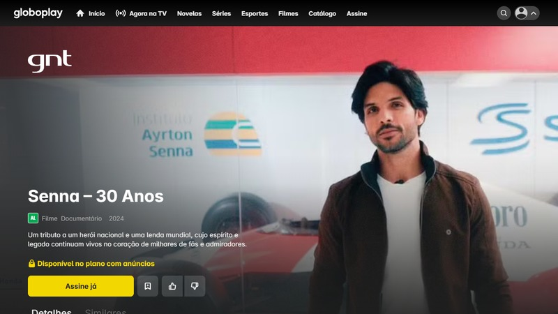
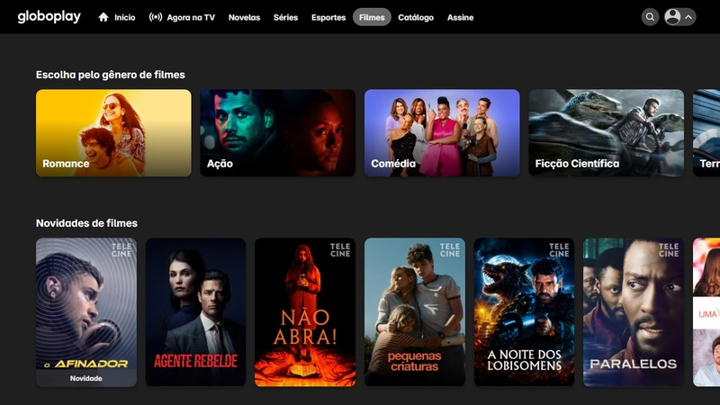
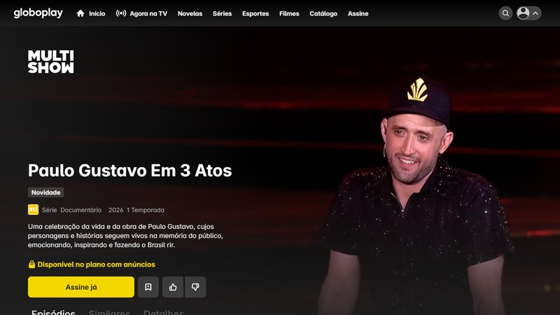
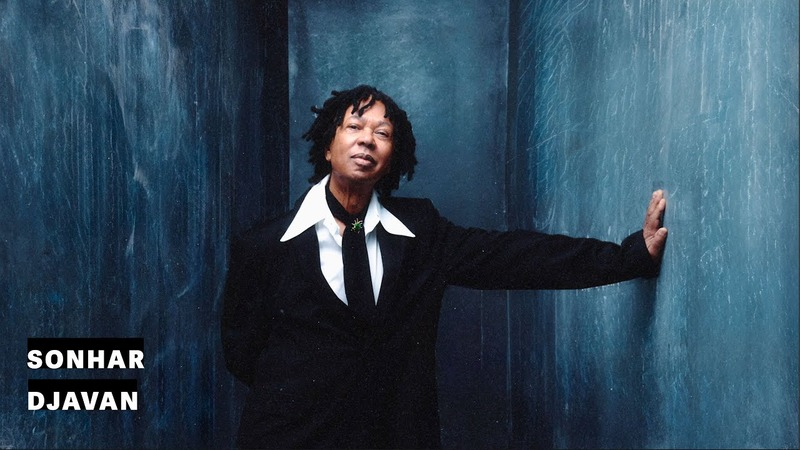
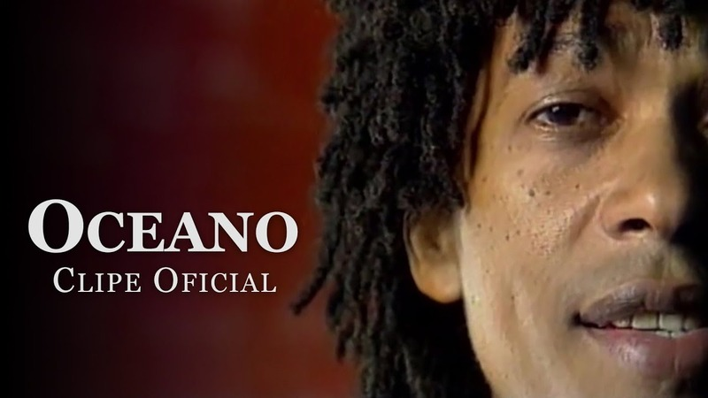
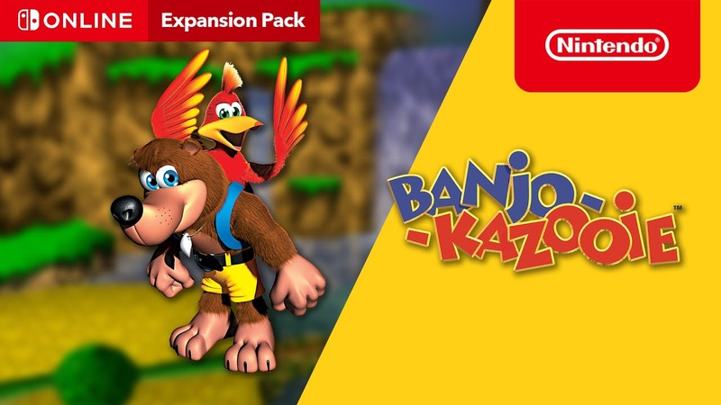
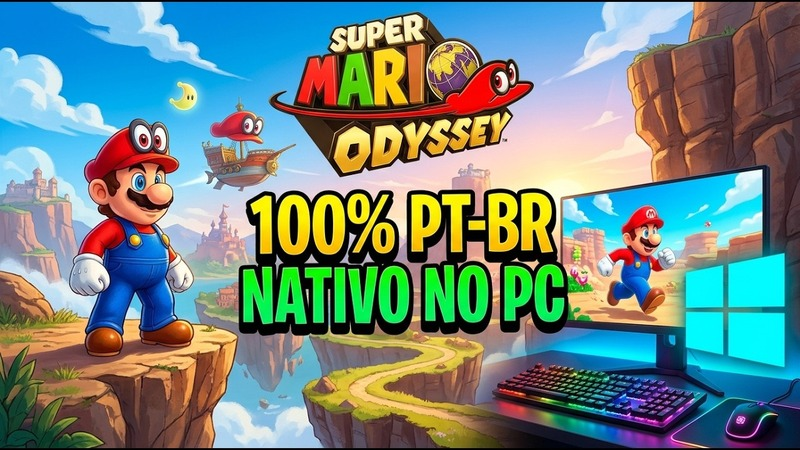
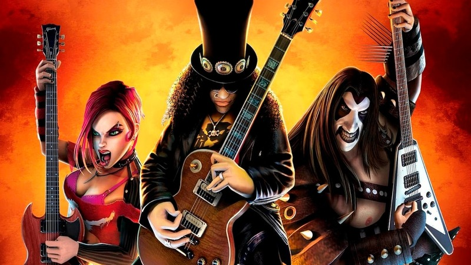

Curadoria de Filmes, Séries, Músicas, Clipes e Games por Iraci Berto Gomes — Agenda 13 (CSS & Flexbox)

Senna – 30 Anos: Produção especial que homenageia a trajetória histórica, as vitórias inesquecíveis e o legado eterno do tricampeão mundial Ayrton Senna.
Fonte: Globoplay – Senna 30 Anos

Filmes Online no Globoplay: Seleção completa de grandes sucessos do cinema nacional e internacional para assistir em streaming a qualquer momento.
Fonte: Globoplay – Categoria Filmes

Paulo Gustavo Em 3 Atos: Especial emocionante que celebra o talento, o humor contagiante e as obras marcantes de um dos maiores artistas brasileiros.
Fonte: Globoplay – Paulo Gustavo
Hungria – Amor e Fé (#CheiroDoMato): Videoclipe oficial que une poesia musical, superação e melodia marcante em uma produção audiovisual inspiradora.

Djavan – Sonhar (Visualizer Oficial): Obra da Música Popular Brasileira que destaca a sofisticação harmônica e a voz inconfundível de Djavan.

Djavan – Oceano (Clipe Oficial HD): Um dos maiores clássicos da música brasileira, consagrado pela letra poética e arranjo acústico atemporal.

Banjo-Kazooie (Nintendo Switch Online): Trailer oficial do clássico jogo de aventura 3D do Nintendo 64 remasterizado para a plataforma Nintendo Switch Online.

Super Mario Odyssey PT-BR: Demonstração técnica de gameplay e localização em português brasileiro de um dos títulos de plataforma mais premiados dos games.

Guitar Hero 3 no Navegador (TecMundo / Voxel): Novidade tecnológica que permite jogar gratuitamente o clássico jogo musical direto pelo navegador web sem precisar instalar nada.
Desenvolvido por Iraci Berto Gomes — ETEC / Centro Paula Souza — Desenvolvimento de Sistemas I (Agenda 13: CSS, Reset CSS e Flexbox)